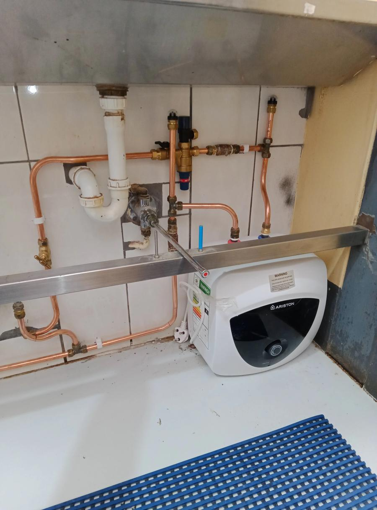

Describe the symptoms
Tell us whether there is no hot water, visible leaking, a dripping overflow or an electrical trip.
Cape Town plumbing service
No hot water, a dripping overflow or water around the geyser can signal several different faults. Bulldog Plumbing assesses the plumbing side of the system, explains what needs attention and completes the appropriate repair or replacement work.

How we can help
Water marks on the ceiling, a steady overflow drip, low hot-water pressure, unusual sounds or a sudden loss of hot water all deserve attention. A visible leak should be treated urgently because water can travel through ceilings and walls before the full extent is obvious.
If the geyser is tripping the electricity, do not repeatedly reset the circuit. Keep away from wet electrical points and arrange an assessment.
What to expect
Tell us whether there is no hot water, visible leaking, a dripping overflow or an electrical trip.
We check the geyser connections, valves and surrounding pipework to identify the likely source of the problem.
You receive a clear explanation of the plumbing work required before the repair or replacement proceeds.
Straight answers
The correct option depends on where the leak originates and the condition of the unit, valves and pipework. An inspection is needed before recommending repair or replacement.
Some discharge can occur as water heats, but a continuous or heavy flow can indicate a valve, pressure or temperature-related problem. A plumber should assess persistent dripping.
Yes. Bulldog Plumbing handles geyser-related plumbing, including connected pipework and control-valve problems. Contact us with the symptoms for a free quote.
Related services
A plumbing emergency can damage floors, walls and fittings quickly.
View serviceNot every leak is visible.
View serviceA burst or split pipe needs fast attention.
View serviceLet’s sort it out
Tell us what is happening and where you are. Photos are welcome if the area is safe.